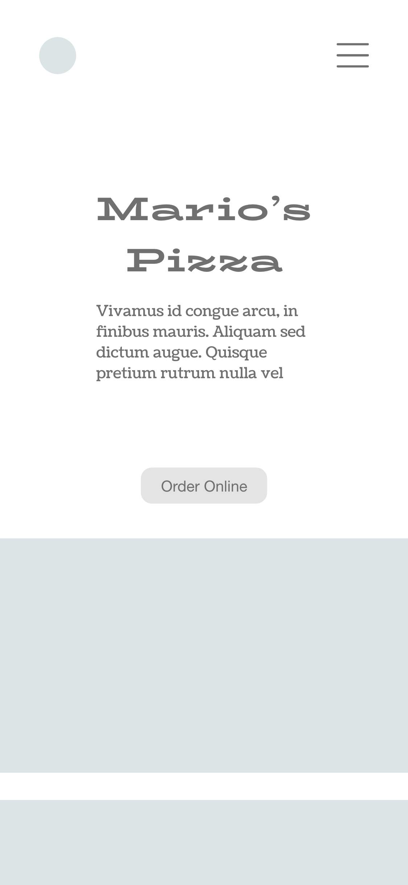

Mario's Pizza — mobile pizza ordering experience
Adobe XD
A design challenge I received focusing on the user experience of pizza orders. Specific client needs: mobile interface, choose between multiple stores, offer add-ons, and offer personalization/customization without showing too many options at once, which overwhelms and deters users.
—
Research
landing / "order online" button / select items / customize / select add-ons / address+billing / confirmation
Pain Points
- Sites tend to be very busy and high-contrast/high-saturation, making it difficult to navigate and read pages.
- Stores with multiple locations often ask for users to input their address before they're even shown the menu, which forces users to do extra work while providing little motivation to do so.
- A lot of the UI for customization is either dated or confusing because there are so many buttons.
- Most sites don't show any indicator of progress while progressing through order steps.
Keeping these things in mind, I decided to aim to make the overall aesthetic of my deliverable simple and modern, add an auto-locate feature, and design a system to show progress.


Sketching


Wireframe
- how to structure the location page
- visual aesthetic for images (round for aerial pizza view vs rounded square)
- how to make choosing pizza sizes intuitive
- breadcrumbs design
- cart layout


Wireframe 2





high-fi